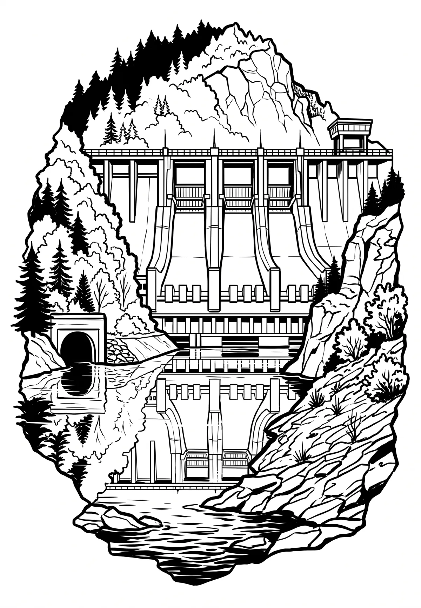

Slapská přehrada
Vodní nádrž Slapy je přehradní nádrž na řece Vltavě u obce Slapy ve Středočeském kraji, součást tzv. Vltavské kaskády. Podle rozlohy (11,626 km²) je šestou největší přehradou v České republice. Její hloubka je 58 m a hladina se nachází v nadmořské výšce 271 metrů.
Více na Wikipedii